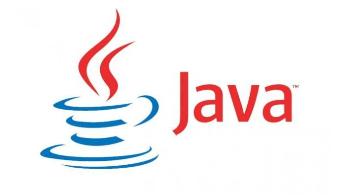
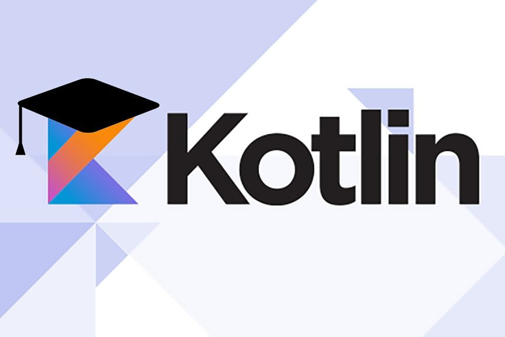
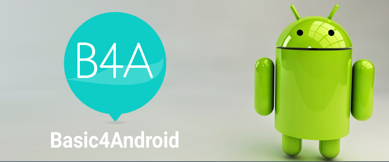
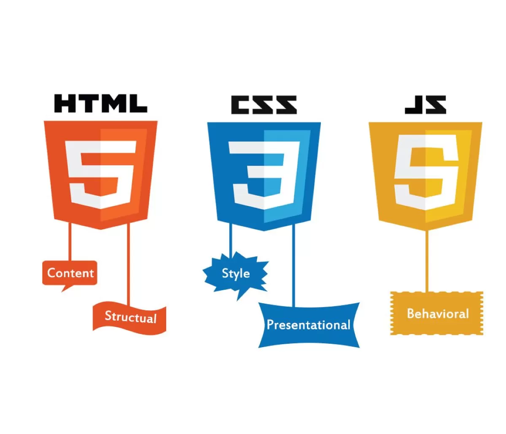

JAVA
É tido como a linguagem oficial para o desenvolvimento do Android e é suportado pelo Android Studio.
KOTLIN
O Kotlin é a linguagem Android introduzida mais recentemente. É semelhante ao Java, mas é tida pela comunidade de desenvolvedores como mais acessível de se entender.
C/C++
O Android Studio suporta C ++ com Java NDK. Isso permite codificação nativa, o que pode ser útil para coisas como jogos. Vale ressaltar, entretanto, que o C ++ pode ser um pouco mais complicado para iniciantes.
BASIC
Uma opção de bônus é aprender o BASIC e experimentar o B4S IDE do Anywhere Software. Esta é uma ferramenta fácil, mas também muito poderosa, embora definitivamente muito mais de nicho.
UNITY

A Unity é conhecida como o motor para games móveis. Ela fornece renderização em gráficos 3D, além de cálculos físicos. Trata-se de uma ferramenta open source que é vista como muito acessível para criar games do zero, além de contar com forte apoio da comunidade open source.
PHONEGAP (HTML, CSS, JAVASCRIPT)
Por fim, se você já souber criar páginas da Web interativas, pode usar esse conhecimento com o PhoneGap para criar um aplicativo multiplataforma mais básico.